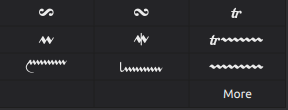
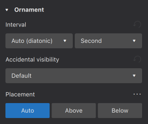
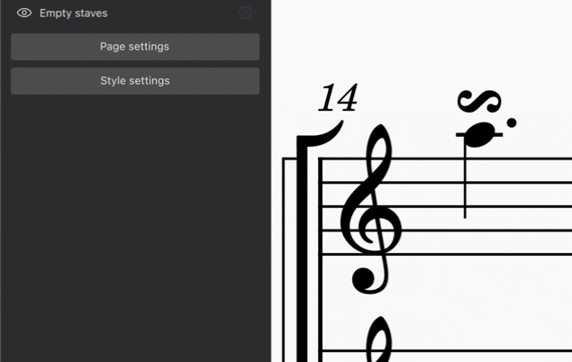
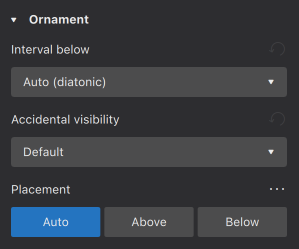
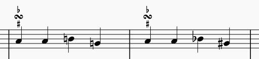
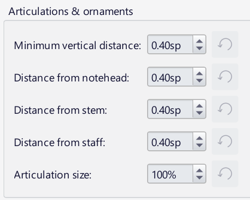
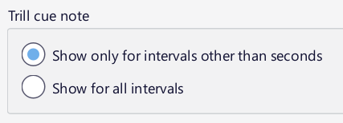

装饰音
装饰音和装饰音线可从装饰音面板应用。如果它尚未显示在面板区域中，请参阅添加更多面板。可用的装饰音包括回音、颤音（短）和波音，在此讨论。可用的装饰音线（包括长颤音线、上回音、下回音、复合回音）请参见其他线条。

向乐谱添加装饰音
添加装饰音
要向乐谱添加装饰音：
- 选中一个或多个音符
- 在装饰音面板中单击所需装饰音。
仅对于颤音，可以在步骤 2 中改用自定义快捷键。
添加装饰音线
参见装饰音线的主章节其他线条。
应用装饰音线的步骤与任何其他线条相同，即：
- 选中起始音符
- 按住 Shift 并单击结束音符
- 在装饰音面板中单击装饰音线。
如果之后需要调整装饰音的长度，参见更改线条的范围。
更改装饰音音程（添加变音记号）
装饰音会感知调号和小节中的其他变音记号。默认情况下，颤音、回音、波音和其他装饰音会显示并演奏自然音程。使用属性面板更改音程，可在乐谱中显示相应的变音记号并更改播放。
要更改装饰音的音程：
- 选中一个装饰音
- 打开属性面板
- 使用音程选择器选择所需音程。乐谱将显示所选音程的相应变音记号。
颤音可按音质（大、小、增等）和从同度到八度的音程数进行自定义。相应的变音记号或上方辅助音将显示在装饰音上方或下方的乐谱中。对于大于二度的音程，请考虑使用震音。

回音可设置上方和下方音程。

短颤音和波音的音程可设置为小二度或大二度。

仅由装饰音引入的任何变音记号，必须在该小节稍后处进行确认或取消以保持清晰，这意味着在以下情况下无法删除音符上的变音记号：
- 该音符位于带变音记号的装饰音之后且在同一小节内
- 该音符与装饰音指定了变音记号的音符（不包括基音）具有相同的音级
例如，在如下所示以 A 上的半音回音开始的小节中，该小节稍后出现的所有 G 和 B 都会有变音记号，即使它与装饰音中出现的相同。

虽然这些变音记号无法删除，但可以将其设为不可见。操作方法：
- 选中变音记号
- 打开属性面板
- 取消勾选可见。
装饰音属性
所选装饰音的以下属性可从属性面板的装饰音部分编辑：
变音记号可见性
- 默认：只显示尚未在该小节中出现、或不在调号中的变音记号
- 显示任何变化：即使变音记号已在该小节早些时候出现过（且不在调号中），也再次显示
- 始终显示变音记号：无论上下文如何都显示变音记号。
放置
使用放置控件，可以让 MuseScore Studio 自动选择标准放置，也可以手动选择上方或下方。
变音记号属性
装饰音上出现的任何变音记号都可以独立选中，并在属性面板中提供括号类型选项（无、圆括号或方括号）。
装饰音样式
装饰音的默认大小和间距属性可在 格式 -> 样式 下的演奏记号与装饰音中编辑：

装饰音可以通过在乐谱中单击并拖动，或通过属性面板中的外观对话框单独重新定位。

颤音提示音符设置允许您指定何时显示带括号的提示性尺寸音符来指示颤音音程。默认情况下，这些音符只对大于二度的音程显示；如果您希望它们也显示在二度颤音上，请选择对所有音程显示。